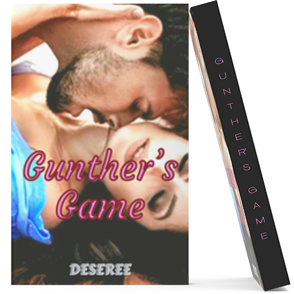

Gunther's Game

A player, with women as his game and a writer, who lost her will to write again. Found each other in an unexpected way.
Gunther Kendrick and Alexi Myers, two individuals previously played by fate about love.
They meet once but never become acquaintances.
However, because of a sudden and very fortunate event at Gunther’s co-owned construction firm, fate has decided for them to meet again.
Since then, Gunther can’t seem to leave Alexi alone.
He’s somewhat interested in her.
And one unfortunate event in Alexi’s life, Gunther uses her mishaps for her to sell to him her unfinished manuscript.
And in desperate need of money, she finds herself agreeing to his offer, not thinking about the consequences of her decision. And unbeknownst to her,
she had fallen herself trapped in Gunther’s twisted game.